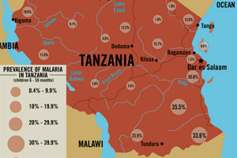

TANZANIA
Infographic, created in Illustrator
Michigan State University CAS 206
Instructed by Karl Gude
A piece that inspired me to analyze impoverished areas
DYNAMITE EFFECT
Infographic, created in Illustrator
Michigan State University CAS 111
Instructed by Karl Gude
A piece that portrays the non-profit organization the GO* Effect through the analogy of a dynamite